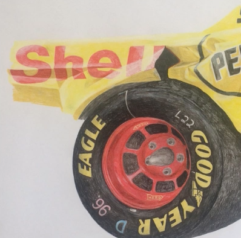
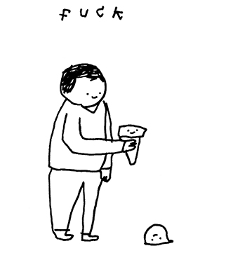
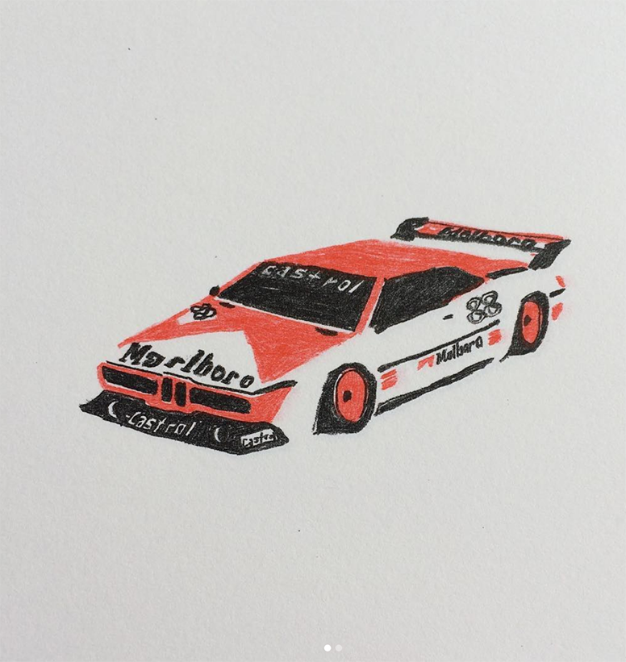
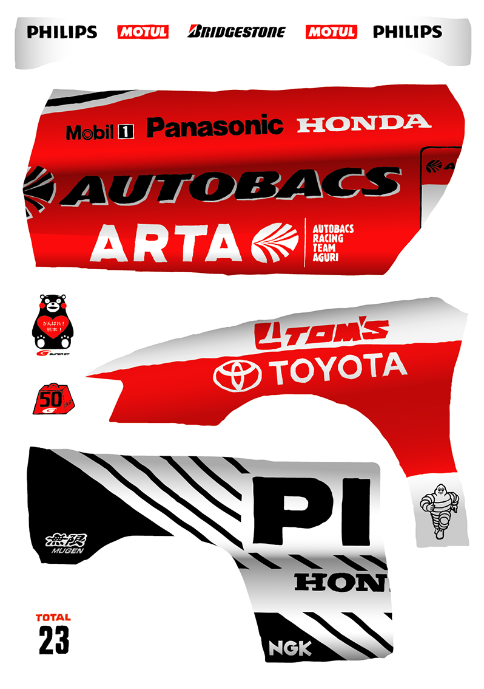
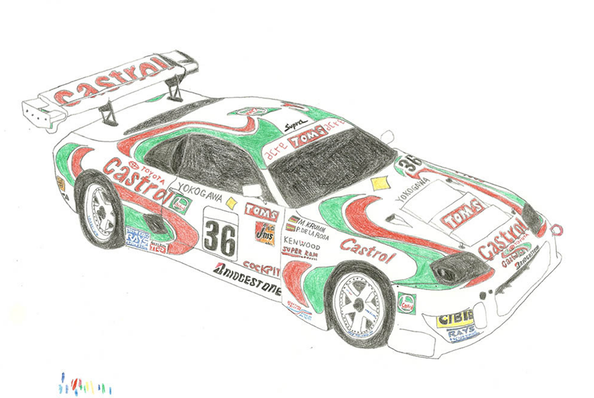
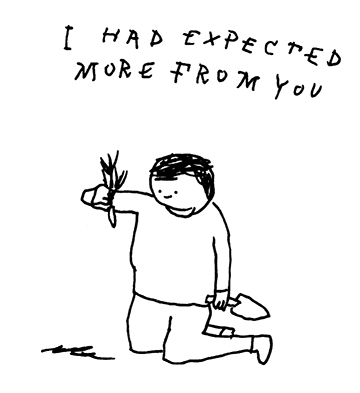
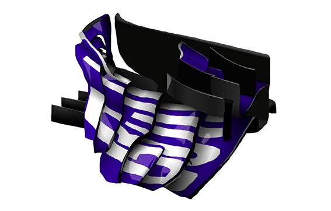

Do you have any other observations or thoughts you’d like to add, or an answer to a question you wish we’d asked?
Mercedes 300sl* or WedsSport Advan gr Supra*, are my favourite cars.




Why sports cars? Are you also particularly interested in logos that cover sports cars?
Mainly I think they’re cool. The racing liveries also, I like the mashed up aesthetic of lots of different logos and colours put together. Probably comes from playing Gran Turismo and watching Formula 1. When I was young, my dad offered me a model F1 car if I said I preferred cars to animals. I said animals, so I didn’t get the model. I could have lied, I suppose I was a bit of an idiot. But I try and keep a balance, in case the offer comes back. Otherwise, I’ll inherit it at some point.
In your book “A Bit Like Sponge, and Other Things”, logos play a big part in the design as well as your drawings? Have you published any more books since you graduated and can we expect to see more of it in the future?
I didn’t really notice my fondness for logos then, I felt it was just a coincidence that both works centered around them, but the jury made a point of it during graduation, seems obvious now. I’ve published 2 since (of the line drawings), and a third one will be published soon-ish. I like making books so I did self publish the first two (and the diary before) but it’s time consuming and I have a job now so someone else will take care of that.


Could you please tell us about your flower drawings?
After graduating I did a print of leaves, and it was very very green. So the idea has been to redo a print with just flowers, much more colourful and varied. I’m slowly getting around to it. I tend to draw things that I find pretty, which are mainly racing cars and nature. My new obsession is birds.
What do the drawings do for you?
I can offload my troubles onto someone/something else. And be more of an asshole than in real life, which is nice.
Do you reflect over life a lot, hence your line drawings?
Maybe. Wallowing in self pity also, which I think helps to be cynical. A lot of it is just me complaining. I don’t like to draw people, I’m not very good at it, obviously, but I like to take the piss and draw cute faces.



If you’re working on something interesting at the moment that you wish to notify people of, here’s a good opportunity to do so:
I’m working on a book of race-car parts and logos, kind of like a badly drawn archive. It was a botanical encyklopedia in the beginning, but I think it will be nice with cars instead.


 CLARISA
CLARISA